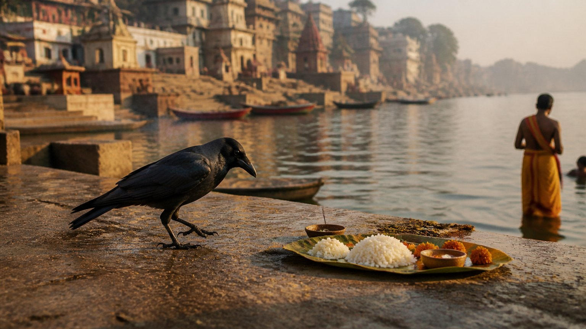
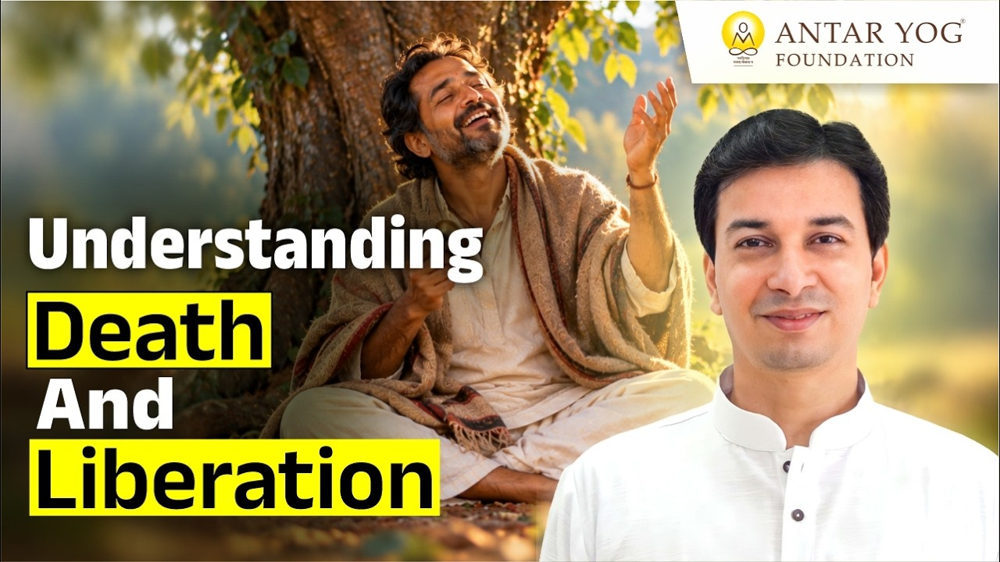

पितृ पक्ष आते ही कई प्रश्न मन में उठते हैं। पितर कौन हैं? श्राद्ध (श्रद्धा से किया गया पूर्वजों का स्मरण) और तर्पण (जल अर्पण) का वास्तविक अर्थ क्या है?
और सबसे गहरा प्रश्न: हमारे पितरों को सच में मुक्ति कौन दे सकता है? इन्हीं प्रश्नों पर ब्रह्मर्षि आचार्य उपेंद्र जी ने बड़ी सरलता से प्रकाश डाला।
क्या मृत्यु हो जाना ही मुक्ति है?
हम में से बहुत लोग मान लेते हैं कि जो चला गया, वह मुक्त हो गया। आचार्य जी कहते हैं कि यह एक आम गलतफहमी है।
हाँ, मृत्यु के बाद व्यक्ति यहाँ की समस्याओं से कुछ समय के लिए छूट जाता है। पर यह छुटकारा अस्थायी है। उसका बहुत कुछ अभी शेष है। आचार्य जी कहते हैं कि मृत्यु और मोक्ष दो अलग चीज़ें हैं।
मृत्यु: शरीर गया, पर जीना बाकी रहा
मृत्यु का अर्थ है कि केवल शरीर चला गया, लेकिन "जीना" शेष रह गया। अधूरी इच्छाएँ और कामनाएँ अभी बाकी हैं।
उन्हीं के लिए जीव फिर एक नया शरीर लेकर लौटता है: मनुष्य का, पशु का, पक्षी का, किसी का भी। हिंदू मान्यता के अनुसार ऐसे जीव का यहाँ फिर जन्म होना ही है।
अगर आज आपका शरीर छूट जाए, तो कौन-सी इच्छाएँ आपको फिर यहाँ खींच लाएँगी?
मोक्ष: मोह का क्षय
मोक्ष का अर्थ ही है मोह का क्षय (the dissolving of attachment)। संसार की मोह-माया, कामनाएँ, वासनाएँ और आसक्तियाँ, जिनमें हम अटकते हैं, मोक्ष में इनका क्षय हो जाता है।
और यह जीते जी होता है। शरीर रहता है, पर "जीना" समाप्त हो जाता है।
इसका अर्थ यह नहीं कि व्यक्ति निर्जीव या उत्साहहीन हो गया। बस छोटी-छोटी सांसारिक कामनाएँ नहीं रहीं। वह जीवन मुक्त (liberated while living) हो गया, एक संन्यासी जैसा। आचार्य जी कहते हैं, यही अवस्था हमें प्राप्त करनी है।
मुक्ति कौन दे सकता है?
जब हम पितरों की मुक्ति की बात करते हैं, तो उनके जाने के बाद की बात करते हैं। इसका अधिकार उसी को है जो स्वयं जीते जी मुक्त हो चुका है।
आचार्य जी का उदाहरण बहुत सीधा है। धनवान ही किसी को धन दे सकता है। शक्तिमान ही अपनी शक्ति से किसी की सहायता कर सकता है। वैसे ही मुक्ति वही दे सकता है जिसके पास स्वयं वह जीवन मुक्त अवस्था हो। और यह मुक्ति जीते जी ही दी जाती है।
हज़ार ब्राह्मण और एक योगी
आचार्य जी विष्णु पुराण का प्रमाण देते हैं। तीसरे अंश के पंद्रहवें अध्याय का छप्पनवाँ श्लोक, जो अध्याय का अंतिम श्लोक है, और उससे पहले के तीन-चार श्लोक पढ़िए।
(विष्णु पुराण, तृतीय अंश, अध्याय १५, श्लोक ५६)
वहाँ स्पष्ट कहा गया है कि हज़ार ब्राह्मणों को भोजन करा दें, उनसे पूजन करा दें, तब भी पितरों का मुक्त होना कठिन है; जबकि एक योगी उन्हें तुरंत मुक्त कर सकता है।
इसका अर्थ यह नहीं कि ब्राह्मण मुक्ति नहीं दे सकते। अर्थ यह है कि करने वाला तपस्वी हो, उस अवस्था में स्थित हो।
बेटे के श्राद्ध की प्रतीक्षा क्यों?
आचार्य जी कहते हैं, कभी इस इंतज़ार में मत रहिए कि मेरा बेटा कभी आकर श्राद्ध करेगा, तब मैं मुक्त होऊँगा।
"पुत्र गीता" में एक ब्राह्मण पिता अपने छोटे बेटे से कहते हैं, "पढ़ाई कर, आगे चलकर हमारा श्राद्ध करना और हमें मुक्त करना तेरी ज़िम्मेदारी है।"
बालक उत्तर देता है, "पिताजी, कितने ही ऋषि-मुनियों का विवाह ही नहीं होता, और कुछ के संतान नहीं होती।" जैसे रामकृष्ण परमहंस और शारदा देवी। तो क्या उनका मोक्ष नहीं होता?
आत्म-श्राद्ध: जीते जी अपना श्राद्ध
कई ऋषि-मुनि जीते जी स्वयं अपना श्राद्ध कर लेते हैं। गरुड़ पुराण में इसका वर्णन है और इसे आत्म-श्राद्ध कहते हैं।
जिसने यह कर लिया, वह तो मुक्त हो ही गया। और ऐसे ही व्यक्ति के द्वारा आपके पूर्वजों का वास्तविक मोक्ष होता है।
क्या आप अपनी मुक्ति किसी और के हाथ में छोड़कर निश्चिंत बैठे हैं?
पिंडदान और कौवे की परीक्षा
आजकल पिंडदान पंद्रह-बीस मिनट में निपट जाता है, और कौवे भी पिंड छूकर चले जाते हैं। पर आचार्य जी सावधान करते हैं।
कौवे पिंड को आसानी से नहीं छूते, और यह कुछ पंडित भी जानते हैं। इसलिए वे पिंड पर दही डाल देते हैं। कौवा चोंच से ऊपर का दही निकाल लेता है, पर पिंड को ज़रा भी नहीं छूता।
तो ध्यान से देखिए कि कौवा पूरा पिंड छू रहा है या नहीं।

नर से नारायण
यही है मृत्यु और मुक्ति के बीच का फासला। आचार्य जी का संदेश स्पष्ट है: जीते जी मोक्ष पाने का संकल्प कीजिए, नर से नारायण बनने का।
मुख्य बातें
- मृत्यु केवल शरीर का जाना है; अधूरी इच्छाएँ जीव को फिर जन्म लेने पर विवश करती हैं।
- मोक्ष का अर्थ है मोह का क्षय, और यह जीते जी प्राप्त होता है।
- जीवन मुक्त व्यक्ति निर्जीव नहीं होता; बस उसकी सांसारिक कामनाएँ नहीं रहतीं।
- केवल जीवन मुक्त व्यक्ति ही दूसरे को, पितरों को भी, मुक्ति दे सकता है।
- विष्णु पुराण के अनुसार हज़ार ब्राह्मणों के भोजन से भी जो कठिन है, वह एक योगी तुरंत कर सकता है।
- पुत्र के श्राद्ध की प्रतीक्षा मत कीजिए; ऋषि-मुनि आत्म-श्राद्ध द्वारा जीते जी मुक्त होते हैं।
- पिंडदान में सजग रहिए और देखिए कि कौवा सच में पूरा पिंड छूता है या नहीं।
